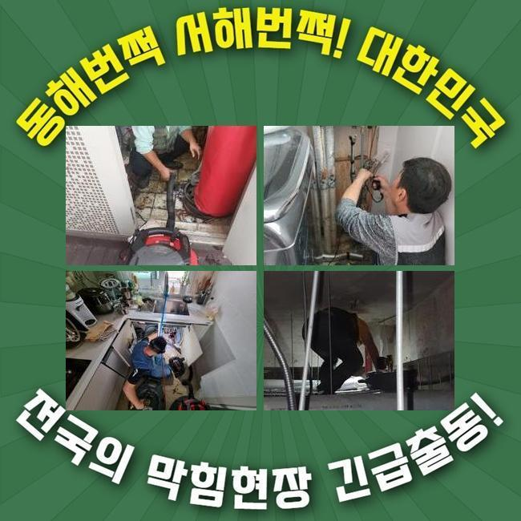
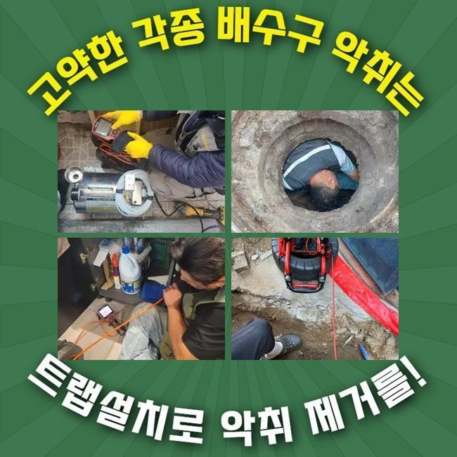
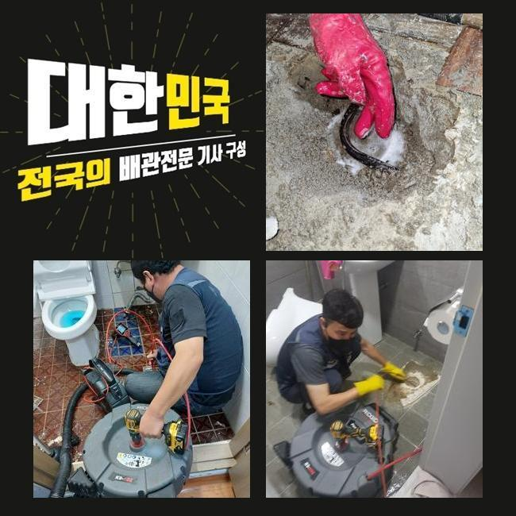
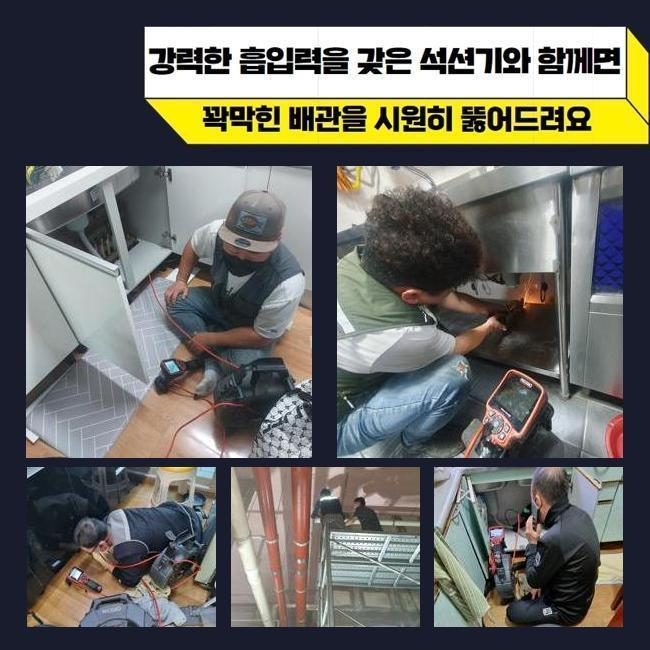
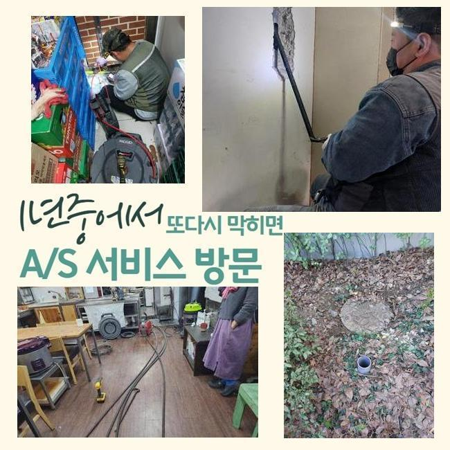
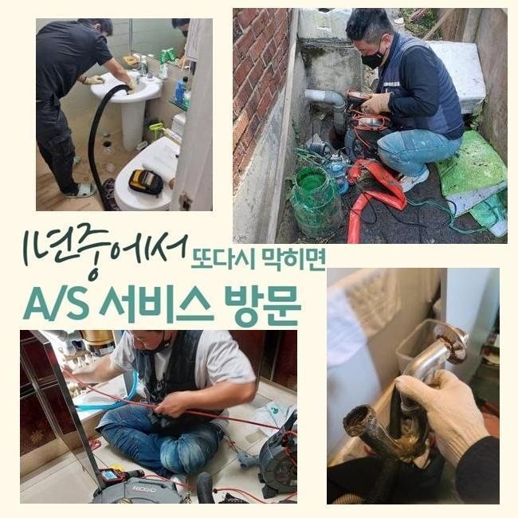
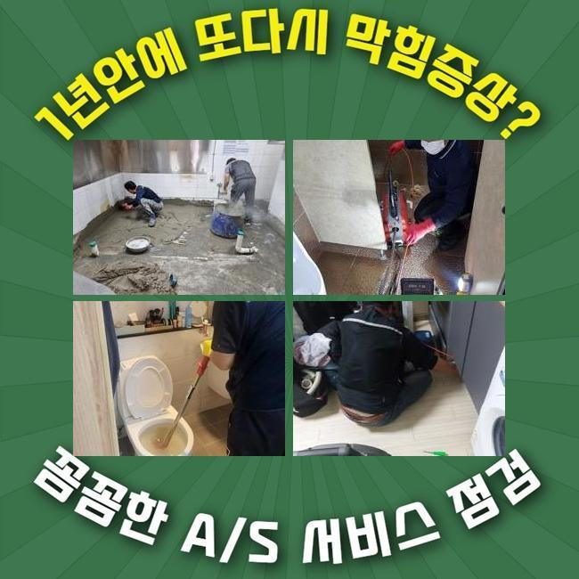

🏠 수원 금곡동하수도막힘 세류동 집수정청소 누수
수원 하수구막힘 전문 시공 후기

📋 작업 개요
- 위치: 수원
- 서비스 유형: 하수구막힘, 배관막힘, 집수정막힘, 누수수리, 역류해결, 뚫는업체, 배관청소
- 작업 일시: 2025. 2. 21. 23:56
- 업체명: 하수구수사대 (010-5615-2118)
🔍 문제 상황
수원 금곡동하수도막힘 세류동 집수정청소 누수
주방이나 욕실은 없어서는 안될 곳인데요
그러므로 일상중에 갑작스럽게 관로가 막혀버린다면 불편은 말로다 형언하기 어려울겁니다
하지만 배수와 관련한 문제들을 내버려두고 방치해버리는 의뢰인분들이 많더라고요
얼마간의 기간이 지나면 사태가 완화되거나 추가적으로 문제가 생기지는 않을거라고 믿기 때문이랍니다
반면 실상은 판이합니다
이를 초창기에 적합하게 처치한다면 골치아픈 형국을 피해갈수 있을거에요
배수성능이 약화되었다는건 가지배관이나 공용관로에서 물흐름을 막는 노폐물이 머물러있다는 이야기입니다
이물질들이 추가로 누증돼 더욱더 고약한 사태로 치닫기 전 배관전문가에게 의뢰해서 진단을 적절하게 이행하고 순차적으로 청소해야 돼요
저저번주에 내방드린 지점을 세밀하게 알려드리도록 할게요
유사한 증세로 전문가를 찾으시는 이웃님들께 도움이 되었으면 해요
저희기술팀이 출장간 데는 꼬마빌딩에 소재한 식당입니다
의뢰자께선 욕실과 개수대공간까지 점진적으로 하수처리가 안되는 상태라고 말씀하셨죠

🔎 원인 분석
💡 전문가 진단: 정밀 진단 장비를 사용하여 슬러지의 고착 여부를 판명하고 타격/세척 작업을 실시했습니다.
일절 안빠지는건 아니었고 얼마지나면 소멸되어서 다음에 고치자는 생각을 갖고 사용을 이어가갔다 하시네요
결과적으로 이물의 양이 증대되어서 물흐름이 멈춰버렸고 고약한 냄새가 올라오는 상황까지 일어나게 된거죠
하수관은 상당히 길고 비좁게 되어있어요
그렇기에 맨눈으로 보아서는 침전물이 얼마큼 존재하는지 파악하기 힘들죠
그렇기에 시공현장으로 넘어갈때는 내시경cctv를 필수적으로 소지해야 해요
해당 기기의 내부에는 카메라가 있어요
그걸로 파악이 힘겨운 배수관 안까지 세밀하게 확인할수 있으며 이물의 종류까지 파악할수 있는거죠
내시경기기로 관찰한 파이프 속은 굉장히 더러웠습니다
석회성분을 포함하여 다양한 이물들이 적체되어 있었어요
이런 오염물질들이 들러붙어 움직이지 않는 상황이어서 비좁은 관로구멍을 가로막아 배수기능이 똑바로 안되고 있었죠
이것을 방치해버린다면 몸집을 더더욱 키워가면서 배관에서 떨어지지 않게 돼요
그렇다면 더욱더 사태가 악화되는 것이므로 신속하게 시공하기로 했어요
해당 사태에 활용하는 기계는 플렉스샤프트 체인입니다

🔧 작업 과정
좁디좁은 구멍에도 가볍게 진입가능한 장점이 있습니다
노즐끝단엔 체인사슬이 결속되어 돌면서 배수관안쪽에 잔존하는 딱딱해진 다양한 찌꺼기들을 바스러뜨리게 되죠
이어서 샤프트 분쇄작업을 단행하였는데요
드릴에 기기를 체결한뒤 샤프트기계를 돌려 고착화된 노폐물들을 제거해 나갔습니다
어떠한 지점에 찌꺼기들이 모여있는지도 인지하여야 했기에 내시경카메라를 활용한 관찰도 동시진행 했죠
이것으로 적체량이 많은장소를 우선해서 시공해나가면 한층 빨리 처리할수 있답니다
하수관의 내측이 훼손되지않게 조심하며 노폐물들만을 정밀하게 목표하여 분쇄를 해나갔죠
만약 작업중에 배수관에 압력을 준다면 파열이 일어나서 누설증세가 발생할수도 있죠
그러하기에 내시경cctv나 분쇄기기가 준비되는것도 중요한 요소이지만 담당자의 테크닉도 필수적으로 따져봐야하는 부분이겠죠
노폐물들이 잔류한 장소를 깨끗이 정리한다음에 미미한 파편들까지 제거해주었어요
그후 통수시험을 시행했어요
많은양의 오수를 일거에 배수공으로 쏟았으며 정체하거나 역류증세는 없나 진단했답니다
빠르게 빠져나가는걸 확인했고 즉각 인접한 배수시설로 건너가게 되었네요
이쯤하고 마감한다면 한두달 이용에는 괜찮겠으나 나중에 정체가 나타날 확률이 높아서였죠
욕실쪽의 배수관과 이어진 횡주관도 조사하여 노폐물 누적 상황을 알아보기로 했죠
화장실 배수관에서 체증이 일어났을때 이어진 횡주관까지 찌꺼기가 적체되었을 여지가 높으므로 전반적 배수관 정비를 시행하는게 합당합니다
따라서 횡주관에 접근하여 조사를 철저히 이행했고 저희측의 생각과 유사하게 관벽에 달라붙은 노폐물들을 발견할수 있었답니다
메인관로에서 가지배관까지 점차적으로 샤프트기기를 통해 청소했고 이물질이 사라진 청결한 관로를 목견하게 되었네요
머리카락이나 물티슈 등 물에 안녹는 물질들은 일상중에 다시 쌓일 수 있죠
그래서 6개월에 1회 정도는 배관기술자를 통하여 정비하시는게 좋다고 말씀드렸어요
더불어 일상중에 배수관을 보호하는 방책들도 이해하시기 쉽도록 차근차근 알려드렸어요


✅ 작업 완료
배수관이 막혀버리면 다양한 어려움을 마주하게 될것이니 심각한 고장을 목도하기 전에 사전적 보존업무를 실시하는게 바람직하겠죠
빨간날에도 내방가능하다는 것도 안내드렸죠
구축 아파트에서는 누설도 종종 일어나므로 그것과 관계된 의뢰도 많답니다
이에 즉시 뚫음뿐만 아니라 누수작업도 한다는 사실을 안내해 드렸어요
어디에서 고장이 생겼고 언제부터 그랬는지 사전에 알려주신다면 더더욱 신속하게 견적을 드릴수 있답니다
또한 예약시간에 맞춰 배관기술자가 전용장비를 갖추고 빠르게 내방해드릴 것이니 부담없이 전화주시길 당부드려요




⚠️ 베란다 누수 및 방수 관리 방법
- ✅ 비가 많이 올 때 창틀 주변이나 아래층 천장에 얼룩이 생기는지 정기적으로 확인해 보세요.
- ✅ 우수관 주변 실리콘 마감이 들뜨거나 깨진 틈새가 있는지 손상 여부를 수시로 체크하세요.
- ✅ 베란다 바닥 타일의 줄눈(메지)이 소실되면 그 틈으로 물이 침투하여 누수가 유발됩니다.
- ✅ 누수 의심 증상 발견 시 방치하면 아래층 손실이 커지므로 즉시 전문가의 진단을 받으십시오.
💡 핵심 정리
- 확실한 장비 작업(내시경 점검 및 샤프트 스케일링)으로 원인을 뿌리 뽑습니다.
- 작업 후 1년 이내에 동일한 부위 재발 시 100% 무상 A/S 서비스를 보장합니다.
- 서울 · 경기 · 인천 전 지역에 24시간 언제든 긴급 출동할 수 있도록 항시 대기 중입니다.
❓ 자주 묻는 질문 (FAQ)
🚨 수원 하수구막힘 문제로 고민이신가요?
정확한 원인 진단과 확실한 시공으로 재발 없는 해결을 약속드립니다.
24시간 긴급 출동 | 서울 · 경기 · 인천 전지역 | 1년 내 재발 시 무상 A/S